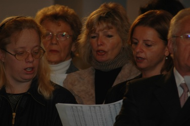

Es gibt praktisch seit der Gründung der Pfarre Wagram einen Kirchenchor.
Die vornehmliche Aufgabe des Chores ist die feierliche Gestaltung der Liturgie zu den Hochfesten und auch sonst während des Kirchenjahres (Advent, Fastenzeit, Patrozinium).
Derzeit singen 42 Frauen und Männer beim Chor unter der Leitung von Chordirektor Franz Wajwoda. Der Chor verfügt über ein eigenes Solistenensemble und ein kleines Orchester, bei dem derzeit jugendliche StreicherInnen eingesetzt werden.
Für die Begleitung bei Orgelmessen und bei der Probenarbeit steht dem Chor mit Frau Mag. Dr. Ida Baumgartner eine routinierte Musikerin zur Verfügung.
Das Repertoire spannt seinen Bogen von der frühen Renaissance über die Klassik bis zur Moderne, von A-capella-Messen (Orlando di Lasso, H.L.Hassler, G.P. da Palestrina) bis zu den Orchestermessen der österreichischen Klassik (Mozart, Haydn, Schubert). Daneben werden geistliche Volkslieder und moderne liturgische Gesänge bei den Gottesdiensten gesungen.
Es besteht auch eine Chorpartnerschaft zum Chor der Marienpfarre in Heidenheim (BRD). Unser Chor gestaltete in Heidenheim bereits mehrere Gottesdienste und sang auch ein viel beachtetes Kirchenkonzert. Ebenso gastierte der Heidenheimer Chor bereits mehrmals in Wagram und sang auch in der ehemaligen Synagoge ein Konzert im Rahmen der Kultur- und Festwochen.
Der Chor probt im Pfarrheim jeden Dienstag von 19.30 Uhr bis 21.15 Uhr (ausgenommen Ferienzeiten).
Daneben ist der Chor auch fester Bestandteil des Wagramer Faschings sowohl beim Umzug als auch in der Faschingsrevue. Es gibt auch immer wieder gesellschaftliche Höhepunkte im Chorleben (runde Geburtstage, Abschlussfest, Ausflüge udglm.).
Somit zählt der Chor zu den aktivsten Gruppen im Pfarrleben.
|  |
Rückblick: Chordirektor Franz Wajwoda wählte für den heurigen Kirchenchorausflug die Kirche von Heiligenblut am Jauerling. Pfarrer P. Benedikt Triebl hielt eine Einführung. Pfarrer i. R. Karl Permoser zelebrierte die heilige Messe, der Kirchenchor umrahmte die Feier mit der Kleinen Choralmesse von Anton Bruckner. NRAbg. i. R. Anton Bayr sprach über Geschichte und Renovierung der Kirche und die dabei erbrachten Leistungen. Als Nachmittagsprogrammpunkt wurde die Burg Oberranna im Rahmen einer Führung besichtigt.

|
Heiligenblut